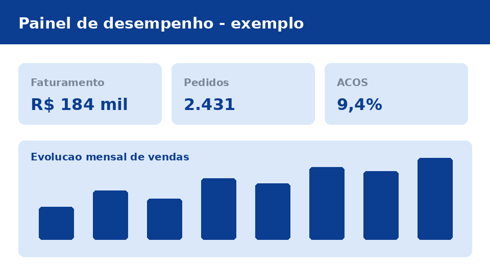

Estruturação de loja
Serviço pontual, cobrado por marketplace. Deixa a conta em condição de competir: catálogo cadastrado corretamente, preço calculado e anúncios escritos para a busca da plataforma.
Somos uma agência de gestão de marketplaces sediada em Borda da Mata, no Sul de Minas. Assumimos a conta do lojista no Mercado Livre e na Shopee de ponta a ponta — da estruturação inicial à gestão contínua de anúncios, preço e performance. Sua operação conduzida por quem vive o dia a dia da plataforma.
Operamos a conta inteira, não apenas uma peça dela. São dois serviços que se encaixam — um pontual, um recorrente.
Serviço pontual, cobrado por marketplace. Deixa a conta em condição de competir: catálogo cadastrado corretamente, preço calculado e anúncios escritos para a busca da plataforma.
Serviço recorrente, cobrado por conta. Depois da loja estruturada, assumimos a operação do dia a dia: preço, campanhas de Ads, reputação e indicadores.
Atendemos CNPJ de qualquer nicho, em dois cenários:
Todo mês o lojista recebe um relatório com os números da conta e a justificativa de cada decisão tomada no período.

O primeiro passo é entender a sua conta e montar uma proposta com os números do seu catálogo. Veja o catálogo de serviços e preços, conheça quem somos e como trabalhamos ou peça sua proposta.